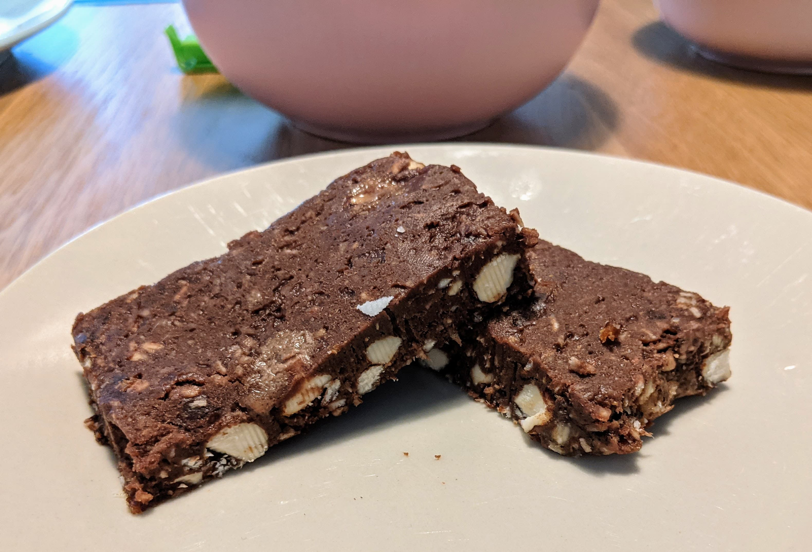

Granola Bars

Try this with some oats substitute: chia seeds, flaxseed, hemp hearts, or maybe just almond flour.
Ingredients:
140g almonds, rougly chopped
140g rolled oats
40g coconut flakes, unsweetened
150g date paste
65g peanut butter
50g dark chocolate, melted
Instructions:
-
To make the date paste, just soak some dates in water and blend them on a food processor until smooth.
-
Toast oats and almonds on a large skilled for about 10 minutes.
-
Mix all ingredients on a large bowl.
Place the mixture on a parchement-lined 8x8 inch baking dish and press on top to compact it a bit. Alternatively could lay them on a muffin tin.
Leave on the fridge for at least 2 hours, but ideally overnight. Then remove and cute into bar shapes.
Originally seen at How To Cook Smarter